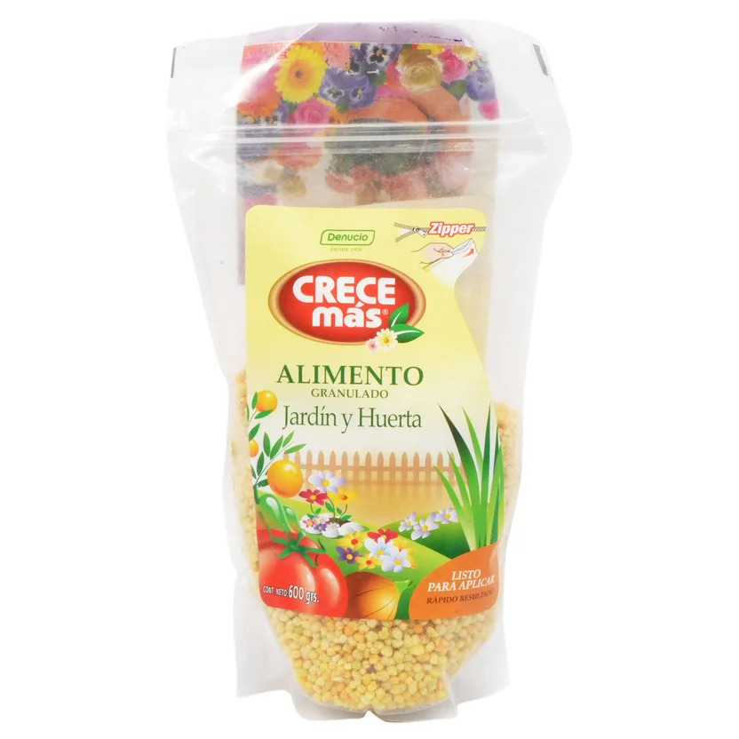

Fertilizante granulado

Fertilizante sólido que contiene nutrientes como nitrógeno, fósforo y potasio en proporciones variables. Se aplica según las necesidades de la planta y las indicaciones de la etiqueta para evitar excesos.